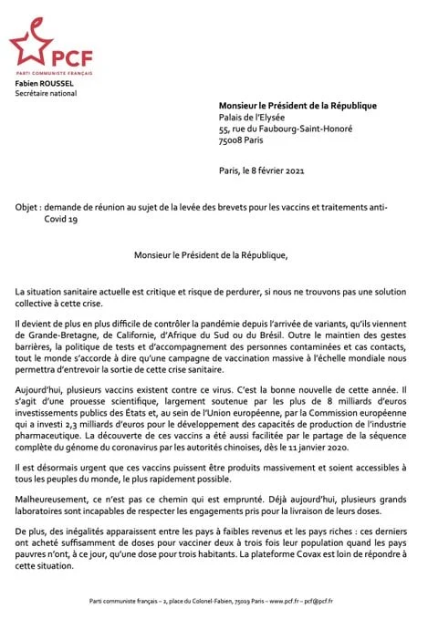
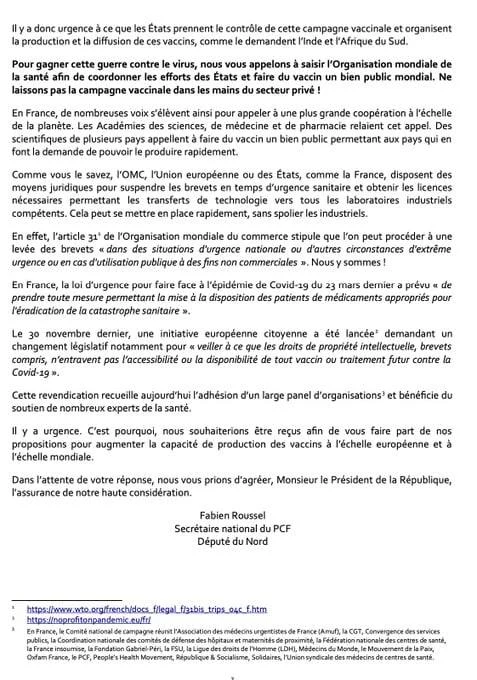

Publication d’archives
Courrier du secrétaire national du PCF au Président de la République pour demander la levée des brevets pour…
Date indiquée par Facebook · 11 février 2021
Texte conservé avec la publication
Contexte du dossier
Le 3 février, la page relaie la campagne européenne Right2Cure, portée avec plusieurs partis de gauche et le groupe GUE/NGL. Elle demande des vaccins et traitements accessibles à tous et conteste leur appropriation par quelques groupes pharmaceutiques alors que l’argent public finance la recherche. Le billet avance un moyen : conditionner les aides à la mise en commun des connaissances et des brevets.
Le 11 février, un message signale le courrier du secrétaire national du PCF au président de la République pour lever les brevets. Le texte conservé ne reproduit pas ici cette lettre : il en atteste le sujet et le destinataire. La pétition européenne et l’interpellation nationale se rejoignent sur une revendication définie, sans qu’un partage de campagne soit transformé en texte exclusivement rédigé par la fédération.


Sources
Archive rouge · export Facebook · AR-0002-FB-02068
À lire aussi · Novembre 2022 : un budget à la hauteur des vies ?